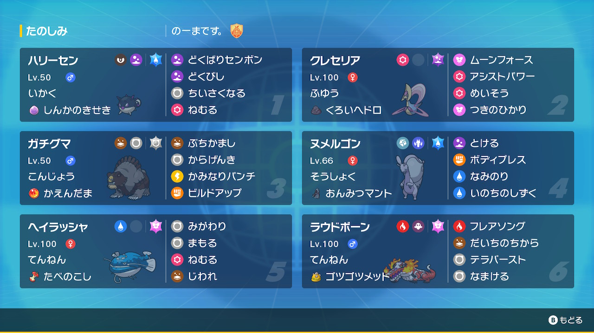

動画
パーティ画像

努力値
ハリーセン @ しんかのきせき
いかく / わんぱく
172(252)-115-117(12)-×-106(244)-105
クレセリア @ たべのこし
ふゆう / ずぶとい
227(252)-×-178(252)-95-141(4)-105
ガチグマ @ かえんだま
こんじょう / いじっぱり
231(204)-211(252)-129(28)-×-103(20)-71(4)
ヌメルゴン @ おんみつマント
そうしょく / おだやか
187(252)-×-152(252)-130-188(4)-80
ヘイラッシャ @ たべのこし
てんねん / ずぶとい
257(252)-×-179(220)-×-85-60(36)
ラウドボーン @ ゴツゴツメット
てんねん / ひかえめ
201(172)-×-120-178(252)-106(84)-86
いかく / わんぱく
172(252)-115-117(12)-×-106(244)-105
クレセリア @ たべのこし
ふゆう / ずぶとい
227(252)-×-178(252)-95-141(4)-105
ガチグマ @ かえんだま
こんじょう / いじっぱり
231(204)-211(252)-129(28)-×-103(20)-71(4)
ヌメルゴン @ おんみつマント
そうしょく / おだやか
187(252)-×-152(252)-130-188(4)-80
ヘイラッシャ @ たべのこし
てんねん / ずぶとい
257(252)-×-179(220)-×-85-60(36)
ラウドボーン @ ゴツゴツメット
てんねん / ひかえめ
201(172)-×-120-178(252)-106(84)-86